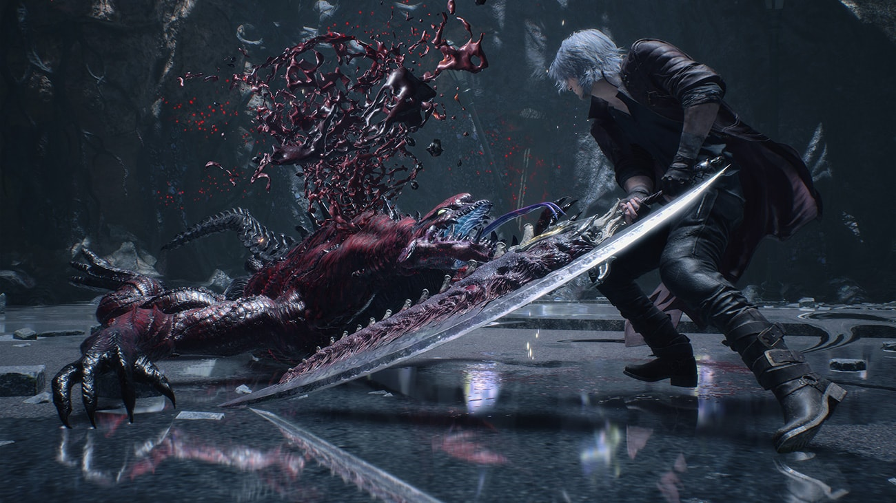
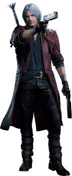
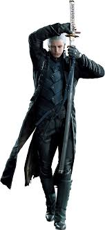
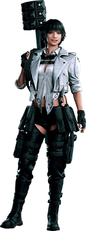
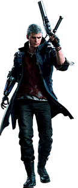

Devil May Cry conta a historia de Dante,um fruto da relação entre uma humana e um dos demonios mais poderosos de todos Sparda onde Dante se torna um Hunter que seria um caçador de demonios

Seus Personagens
Em Devil may Cry tem varios personagens muito legais como o proprio Dante e o seu irmão Vergil q é um filho duma puta que só quer poder,alem disso Vergil tem um filho chamado Nero que o seu braço é um braço de demonio.E tambem tem a Lady...GOSTO-.




Armas Demoniacas
Em Devil May Cry existe varias armas disponiveis no jogo cada uma com sua individualidade e peculiaridade

Melhores Armas Demoniacas
-
1.0 - Rebbellion
-
1.1 - Ebony & Ivory
-
1.3 - Yamato
-
1.4 - Shotgun
-
1.5 - Cerberus Nunchaku
-
1.6 - Nevan
-
1.8 - Artemis
-
1.9 - Lucifer
-
2.0 - Pandora
-
2.1 - Gilgamesh
-
2.2 - Kalina Ann
-
2.3 - Red Queen
-
2.4 - Blue Rose
-
2.5 - Balrog